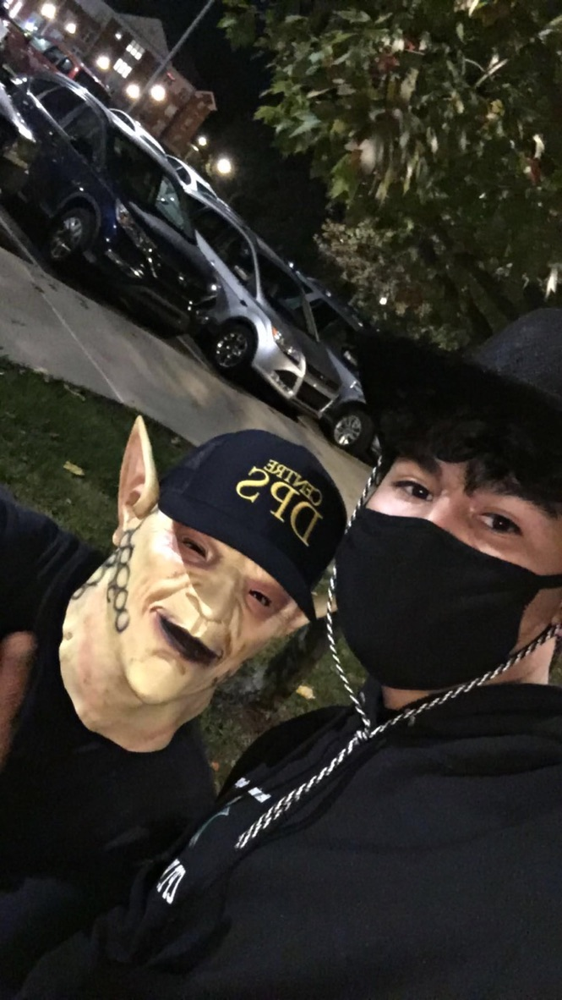

José's Memory


I guess,Yeah, I think it was just hard to do zoom like. Oh, true. We had block scheduling. Oh, I totally forgot about that. That was horrendous. I don't think it works well for Stem classes, especially as a first year. Who's coming in and still like figuring out the rhythm of college because it was very much like go, go, go. And I was drowning.
Spanish, pre dent. Yeah, so I took. I took physics my first semester of college with a couple other humanity courses, and did not do well in physics that first semester, and did even worse the second semester, so I don't know. It was just hard. I think Because we switched back to normal scheduling, which I thought was beneficial for me. But the issue was I had to learn to adjust to a completely different schedule again, which is very disorienting
Back to main page